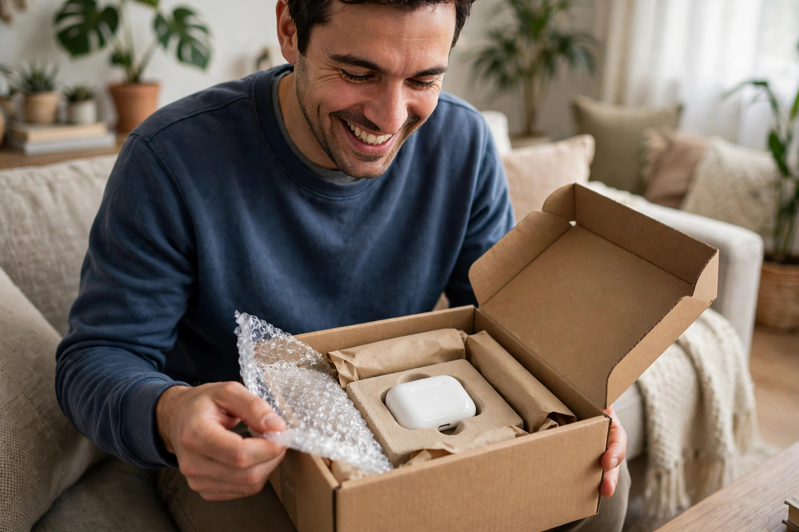

First Impressions Begin With the Parcel
When a parcel arrives torn, crushed or soaking wet, the customer worries about the product before opening it, even if the item itself is undamaged. A clean, firm parcel with sealed edges gives a very different impression. It tells the customer that the seller took care and respected the order. For a small business without a large brand name, this first impression matters a great deal, because it shapes whether the customer trusts the seller enough to order again. A final check before dispatch catches loose tape, weak corners and missing labels early.
Packaging is also part of customer service, not just a cost to keep low. Cheap, weak packaging may save a small amount on each order, but it can lead to damaged goods, replacement parcels and unhappy messages that take far more time to handle. A slightly stronger box or bag, sealed properly, often costs little extra and prevents many problems. Thinking of packaging as protection for both the product and the business reputation helps a seller make better choices from the start. Careful packing protects the seller too, by reducing replacements, refunds and unhappy messages.
Choose Packaging That Fits the Product
The right packaging starts with the size and nature of the product. A box that is far too large lets the item move around during transit, while a bag that is too tight can press against delicate parts. Measure the product, allow a small space for protective material, and choose a box or mailer that holds it firmly without squeezing it. For clothes, a strong mailing bag may be enough, while fragile or heavy items usually need a sturdy box with extra support. Customers often remember neat, secure packaging long after they forget the delivery time.
Also think about the journey the parcel will take, including handling, stacking and possible rain. A parcel sent within one city faces different risks from one travelling between cities over several days. Choose material that can handle stacking and movement, and seal all edges with strong tape rather than a single strip. Testing one parcel yourself, by shaking it gently and pressing the sides, can reveal weaknesses before customers discover them. A short test can prevent many avoidable complaints. Strong outer packaging matters most when parcels are stacked with heavier items in transit.
Protect Items Inside the Box
Protection inside the box is just as important as the box itself. Wrap fragile items separately so they do not knock against each other, and fill empty spaces with paper, bubble wrap or other cushioning material. The goal is simple: the item should not move freely when the box is tilted or shaken. If it moves a lot in your hand, it will move far more during delivery. Take the time to pack each item as if it were travelling on a rough road, because in many cases it will be.
For items with lids, caps or loose parts, secure them before wrapping, and keep small accessories in a separate sealed bag so they are not lost when the customer opens the parcel. If a product has a screen, a polished surface or a sharp edge, add an extra layer of protection around that part. These small steps show attention to detail and reduce the chance of scratches, leaks or breakage. Customers notice careful packing, and they are more likely to trust a seller who protects every part of the order.
Label Clearly and Pack Honestly
Clear labelling helps a parcel reach the right person without delay or confusion. Write the customer name, complete address and phone number clearly, and double-check them against the order before sealing the parcel. If the parcel is fragile, mark it clearly on the outside, but do not rely on the mark alone, because careful internal packing is still needed. A clear label also helps the delivery worker and the customer if the parcel needs to be returned or redirected.
Honest packing also means sending exactly what was ordered, in the condition promised, with any included parts or instructions inside the parcel. Do not hide a defect with extra wrapping, and do not substitute an item without informing the customer first. If an item needs simple care, such as keeping it dry or handling it gently, include a short plain note explaining this. Honest, clear packing builds trust and reduces messages from customers who are unsure what they received or how to use it.
Keep Packaging Simple and Reusable Where Possible
Good packaging does not need to be fancy or wasteful. Simple, clean material that protects the product is usually better than layers of decoration that add bulk without protection. Avoid using so much tape, paper or plastic that the customer struggles to open the parcel safely. A parcel that is easy to open, with the product easy to find, leaves a better impression than one that feels like a puzzle. Simplicity also keeps packing time lower, which matters when orders increase.
Where possible, choose packaging that the customer can reuse, such as a sturdy box or a resealable bag. Many customers appreciate this, especially if they may need to return or store the item. Reuse also reduces waste, which is a practical benefit for households and small businesses alike. The aim is not to impress with luxury packaging, but to deliver a product in good condition, in packaging that is sensible, clean and easy to handle from dispatch to opening.

Learn From Damage and Customer Feedback
Even careful sellers sometimes receive a report of damage, and how they respond matters. Ask the customer politely what happened, which part was damaged, and how the parcel looked on arrival. This information helps identify whether the box was too weak, the cushioning was too thin, or a particular product needs a different method. Keep a short note of each case, because a pattern across several orders is far more useful than a single complaint. Patterns show where a small change can prevent many future problems.
Customer feedback about packaging is also valuable when it is positive. If customers mention neat packing or a product arriving safely, note what was done well and keep doing it. If several customers struggle to open a parcel, simplify the method. Packaging improves through small, steady adjustments rather than a complete change after every order. A seller who listens, learns and adjusts quietly will see fewer damaged parcels, fewer returns and more customers who feel confident ordering again.
Frequently Asked Questions
What is the most common packaging mistake for small online sellers?
Using a box that is too large or too weak, with too little cushioning inside, so the item moves around and gets damaged during transit.
Should fragile items always have extra protection inside the box?
Yes, wrap fragile items separately, fill empty spaces, and protect screens, lids and loose parts so nothing knocks against anything else.
How can a seller reduce packaging waste without risking damage?
Use simple, well-fitting packaging, avoid unnecessary layers, and choose sturdy boxes or bags that customers can reuse where possible.
How can Zaheer Seo Expert help an online business in Pakistan?
Zaheer Seo Expert, based in Layyah and open 24 hours, can help an online business present its products and services clearly online so customers can find and contact it easily. Call 0327 7350830 or email seozaheer14@gmail.com for help.
Want More Customers From Google?
Call 0327 7350830 or email seozaheer14@gmail.com. Zaheer Seo Expert, Layyah - Rajan Shah Road, Rana Nagar, Chak 116 TDA, Pakistan. Open 24 hours.
Get Your SEO Strategy →